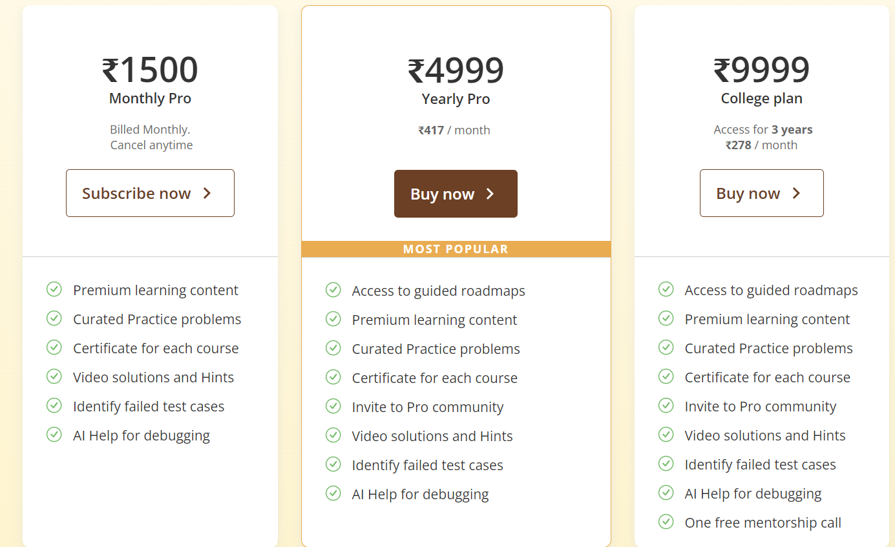

Introduction
Competitive programming or sport programming is a mind sport involving participants trying to program according to provided specifications. The contests are usually held over the Internet or a local network. One of the oldest contests known is the International Collegiate Programming Contest (ICPC) which originated in the 1970s. Participation in programming contests may increase student enthusiasm for computer science studies. The skills acquired in ICPC-like programming contests also improve career prospects, as they help to pass the "technical interviews".
Why Portfolio?
Portfolios serve the purpose of an extensive record of a student’s best work and skills. As the student progresses through life, record keeping and reflection becomes an expectation. Any person with a future-oriented mindset should have a portfolio to create opportunities for a successful life.
Services
Subscription Model for Premium Content
Offering a subscription service for access to premium problems, tutorials, and video lectures in Cp presents several opportunities and challenges. This model not only boosts revenue but also enhances user engagement. However, it's crucial to strike a balance between free and paid content to attract new users while encouraging subscriptions.
Certification Programs
Offering certification programs that validate users' programming skills presents a valuable opportunity in Competitive Programming. By developing a standardized and credible certification process, you establish trust and recognition within the community and industry. Such programs can generate revenue through exam fees while enhancing your platform's brand reputation as a reliable assessment provider. Moreover, partnerships with educational institutions can extend your reach and credibility, creating opportunities for collaboration on curriculum alignment and talent development. However, ensuring the integrity and relevance of certification exams amidst evolving programming practices and technologies remains a key challenge.

Corporate Sponsorships and Partnerships
Partnering with tech companies to sponsor contests and events in Competitive Programming offers substantial benefits and challenges. By establishing relationships with corporate sponsors, you can secure revenue through sponsorships while enhancing the visibility and prestige of your platform. These partnerships not only provide financial support for organizing high-quality contests but also allow for offering attractive prizes, thereby enhancing the overall user experience. However, the challenge lies in securing consistent and high-profile sponsors amidst competition and varying corporate priorities.
Job Placement Services
Offering job placement services in Competitive Programming involves connecting top performers with tech companies, creating a beneficial ecosystem for both talent and employers. By facilitating these connections, you can generate revenue through commission-based models on successful placements while enhancing user loyalty through career advancement opportunities. However, the challenge lies in building and maintaining strong relationships with hiring companies, ensuring that they trust your platform as a reliable source of skilled candidates. Building credibility and demonstrating the value of your placement services through successful matches and satisfied employers are key to establishing long-term partnerships and sustaining growth in this competitive market segment.
Competitions for Organizations
Creating tailored competitions for educational institutions or companies in Competitive Programming presents a unique opportunity to meet specific needs and drive engagement. By offering customized competition formats, you can earn revenue through hosting fees while building strong relationships with industry players. These tailored competitions serve as effective tools for talent scouting and skill development according to organizational requirements. However, it requires careful resource allocation and coordination with clients to ensure that competitions meet their expectations. Establishing a reputation for delivering high-quality, customized experiences can lead to repeat business and referrals, solidifying your platform's role as a preferred partner for specialized programming challenges.

Training and Workshops
Conducting online and offline training sessions and workshops in Competitive Programming provides a valuable opportunity to educate and engage participants. By offering these sessions, you can generate direct revenue through event fees while enhancing your platform's brand authority as a knowledge leader in the field. These events serve as platforms for skill enhancement and networking, catering to both beginners and experienced programmers looking to advance their skills. However, organizing and effectively promoting these events pose challenges that require strategic planning and marketing efforts to attract and retain participants. Building a reputation for delivering insightful and impactful training experiences can lead to increased event attendance and positive word-of-mouth, reinforcing your platform's position as a trusted resource for educational and professional development in Competitive Programming.

Branded Merchandise
Selling branded merchandise such as t-shirts, mugs, and stationery in Competitive Programming offers an opportunity to diversify revenue streams and enhance brand visibility. By offering these items, you can generate additional income while promoting your platform's identity among enthusiasts and participants. However, managing inventory and logistics presents challenges that require efficient planning and execution to ensure smooth operations and customer satisfaction. Establishing an attractive and cohesive merchandise line that resonates with your audience can strengthen brand loyalty and serve as a tangible way for users to connect with your platform beyond digital interactions. Building a reputation for quality merchandise and reliable service can encourage repeat purchases and contribute positively to your platform's overall growth and community engagement in Competitive Programming.
Affiliate Marketing
Partnering with educational platforms and tools through affiliate marketing in Competitive Programming offers a strategic avenue for earning passive revenue and enriching user resources. By establishing these partnerships, you can earn commissions on referrals while providing users with access to relevant and valuable educational resources. However, ensuring that partnerships align with user interests and add genuine value poses challenges that require careful selection and ongoing evaluation. Building a network of trusted affiliates can enhance your platform's reputation as a comprehensive resource hub, offering users convenient access to complementary tools and services that support their learning and development goals in Competitive Programming. Developing a reputation for recommending high-quality and beneficial resources can foster user trust and engagement, ultimately contributing to sustained growth and community satisfaction.

Content Licensing
Licensing problem sets and tutorials to educational institutions and other platforms in Competitive Programming is a practical approach for generating revenue through licensing fees while expanding the reach of your content. By licensing curated problem sets and expert tutorials, you can establish partnerships that allow educational institutions and other platforms to incorporate your high-quality materials into their programs and offerings. However, protecting intellectual property presents a challenge, requiring careful legal agreements and digital rights management to prevent unauthorized use and distribution. Licensing content not only provides a reliable income stream but also enhances your platform's visibility and influence within the educational community, potentially attracting new users and fostering collaboration opportunities.

Educational Collaborations
Collaborating with universities to integrate competitive programming into their curriculum presents a strategic opportunity to generate revenue through collaboration fees while enhancing your platform's reputation in the academic community. By partnering with universities, you can align competitive programming courses and materials with educational standards and requirements, ensuring relevance and value for students and faculty. However, navigating educational standards and adapting to diverse curriculum needs pose challenges that require flexibility and understanding. Such collaborations not only provide a financial benefit but also establish your platform as a credible educational partner, potentially attracting more institutions and students
Hackathon Hosting Services
Hosting hackathons for companies and organizations in Competitive Programming offers a strategic opportunity to generate revenue through hosting fees while increasing platform engagement. By organizing these events, you provide a platform for innovation and collaboration among participants, fostering a competitive spirit and showcasing your platform's capabilities. However, ensuring seamless event execution poses challenges that require meticulous planning, technical support, and effective communication with stakeholders to meet expectations and deliver a memorable experience. Hosting hackathons not only provides a financial benefit but also enhances platform usage and user retention by attracting participants and sponsors interested in showcasing their skills and solutions.

Online Courses and Tutorials
Offering in-depth courses and tutorials on various algorithms and programming concepts in Competitive Programming presents a valuable opportunity to generate revenue through course fees while expanding your platform's reach. By providing comprehensive content, including detailed explanations and practical examples, you can attract a broader audience of learners seeking to enhance their programming skills. However, developing high-quality and engaging content poses challenges that require expertise in curriculum design, instructional design, and content delivery. Providing courses and tutorials not only creates a revenue stream but also establishes your platform as a trusted resource for skill development in the programming community.

Personalized Learning Paths
Providing personalized learning paths and problem recommendations based on user performance in Competitive Programming offers a tailored approach to enhance user engagement and potentially attract premium subscriptions. By offering customized learning paths, tailored problem recommendations, and targeted feedback, you can cater to individual learning styles and skill levels, thereby improving overall user satisfaction and retention. However, developing an effective recommendation system poses challenges that require expertise in data analytics, algorithm design, and user behavior analysis.
Community Contributions
Enabling users to contribute problems and solutions in Competitive Programming for rewards or revenue share offers a dynamic way to enrich content and engage the community. By allowing users to submit and collaborate on content, such as problems and solutions, you can build a diverse and interactive platform that attracts and retains active participants. However, ensuring the quality and relevance of user-generated content poses challenges that require effective moderation and feedback mechanisms. Community contributions not only diversify content offerings but also foster a sense of ownership and collaboration among users, enhancing community engagement and loyalty. Moreover, leveraging user-generated content can potentially reduce costs associated with content creation while maintaining a steady flow of fresh and relevant material.

Scholarships and Grants
Offering scholarships and grants in Competitive Programming for educational purposes, funded by corporate sponsors, presents an opportunity to enhance brand reputation while attracting talented users. By providing financial support to students and professionals pursuing education or skill development in programming, you can strengthen your platform's standing as a supporter of education and talent cultivation. However, managing applications and ensuring transparency in the selection process pose challenges that require clear criteria, fair evaluation methods, and robust communication with applicants and sponsors. Scholarships and grants not only benefit recipients by easing financial burdens but also foster goodwill and loyalty among the community. Moreover, partnering with corporate sponsors to fund these initiatives can align your platform with industry leaders and demonstrate commitment to nurturing future talent in the competitive programming

Algorithmic Research and Development
Conducting and publishing research on new algorithms and optimization techniques in Competitive Programming establishes authority in the field and opens opportunities for funding through research grants. By engaging in algorithmic research and development, your platform can contribute valuable insights to the programming community, potentially leading to advancements in problem-solving techniques and computational efficiency. However, securing funding and publishing in reputable journals pose significant challenges that require rigorous proposal writing, peer review, and academic collaboration. Establishing a reputation for innovative research can enhance your platform's credibility and attract collaborations with academic institutions and industry partners interested in applying cutting-edge algorithms. Building a track record of impactful research can also attract funding opportunities and reinforce your platform's position as a leader in algorithmic innovation and development.

Contact
Contact information and form can be added here.